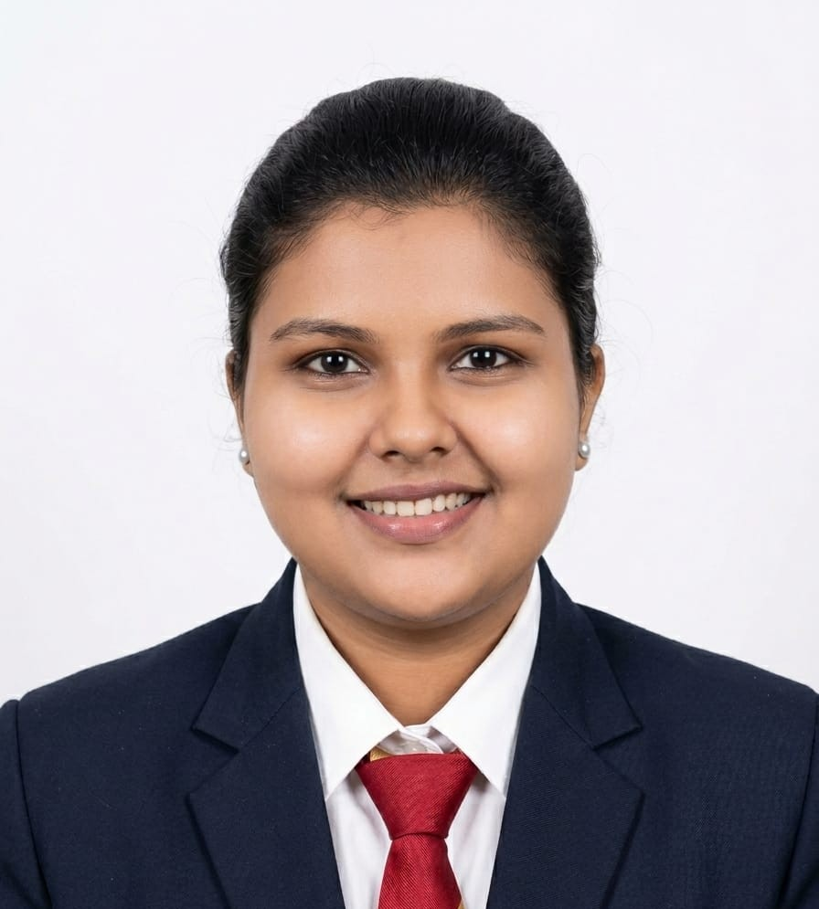

I design and ship multimodal AI systems — from VLM validation pipelines in production to published research on multimodal fusion. Currently looking for full-time roles in AI/ML Engineering, Applied AI, or Data Science.

I'm an AI/ML Engineer with hands-on experience across deep learning, computer vision, NLP, and multimodal AI systems. I completed my M.Tech in Artificial Intelligence and Decision Science at Manipal Institute of Technology, and hold a Gold Medal and University 1st Rank from my B.E. in CSE (Data Science) under VTU.
Most recently, I've been working as a Platform Validation Engineer at Intel, building and testing a VLM-as-a-service pipeline that handles multi-modal inputs — image, video, URL, and text prompts — alongside automated visual validation systems for defect detection and UI verification.
I'm a published researcher, with work in IEEE Access on multimodal fusion for content moderation, and papers on real-time emotion detection and anomalous transaction detection. My project work spans generative AI, transformer architectures, and CNNs applied to real industrial and social problems.
I work primarily in Python, TensorFlow, PyTorch, and Keras, with hands-on experience across BERT, LSTM, CNNs, and generative models — plus Power BI and Tableau for the data storytelling side of the work.